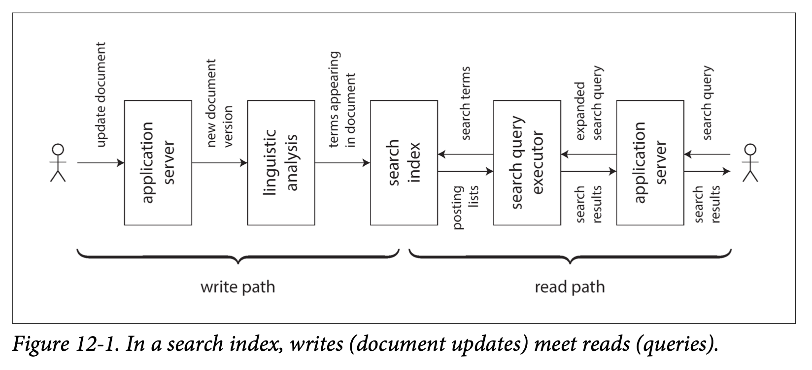

Chapter 12
This chapter will look into the future of data systems
Data Integration¶
For complex applications, data often used in several different ways. We often have to use multiple kind of database together to accomplish one goal
Combining Specialized Tools by Deriving Data¶
It is common to combine OLTP database with full-text search index. This can be done by introducing log based message broker that has CDC feature implemented. We might arrange data to write to a system of record database and use CDC to forward those change to search index in the same order.
Allowing application directly write to both database and search index will introduce race condition.
Derived data vs distributed transactions¶
Classic approach for keep different data system is to use distributed transactions such as 2PC. At an abstract level, 2PC using lock for mutual exclusion while CDC and event sourcing use a log for ordering. Distributed transactions use atomic commit to ensure that changes only effect exactly once, while log-based systems are based on deterministic retry and idempotence.
Biggest difference is transaction system provide linearizability where derived data system often updated asynchronously, so they do not offer same timing guarantees by default
Because of lack support of good distributed transaction protocol, Martin believe that log based derived data is the most promising approach for integrating different data systems.
The limits of total ordering¶
When system scaled bigger enough, limitations of total ordering begins to emerge: - In most cases, constructing a totally ordered log requires all events to pass through a single leader that decides on the ordering. If the throughput of events is greater than single machine can handle, we need to partition it across multiple machines. The order across different partitions is ambiguous - If servers are spread across multiple geographically distributed datacenters, where you would like to tolerate entire data center go offline. This typically requires a separate leader in each datacenter. This implies undefined ordering of events that originate in two different datacenters. - For microservices, a common design is to deploy storage unit as an independent unit. So no two services share same storage system. When two events originate in different services, there is no defined order for those events. - Some application maintain client side state where user input get immediately updated and continue to work offline. With such application, clients and servers are very likely to see events in different orders.
In formal terms, deciding on a total order of events is known as total order broadcast, which is equivalent to consensus.
Most consensus algorithms are designed with single node throughput. It is still an open research problem to design consensus algorithms that can scale beyond the throughput of a single node
Ordering events to capture causality¶
In social network app, after a couple break up, they should not see each other's rude message. This has a unfriend event followed by message event. If this causal dependency is not captured, message will send notification to the user. Starting point to solve this problem could be
- Logical timestamp can provide total ordering so they can help and require recipient to handle events that is out of order.
- Conflict resolution algorithm
Batch and Stream Processing¶
There are also many detailed differences in the ways the processing engines are implemented, but these distinctions are beginning to blur.
Spark performs stream processing on top of a batch processing engine by breaking the stream into microbatches, whereas Apache Flink performs batch processing on top of a stream processing engine [5].
Maintaining derived state¶
Batch process has a strong functional flavor where outputs are deterministic and can be retried many times. No matter what derived data is (cache, search index, or statistical model), it can be think of as a data pipeline. In principle derived data should be maintain synchronously but asynchronous processing make the system more robust (log based message system)
Reprocessing data for application evolution¶
Schema migration on railway is a very interesting example Similarily, batch and stream processing can be used for schema evolution.
You can then start shifting a small number of users to the new view in order to test its performance and find any bugs, while most users continue to be routed to the old view. Gradually, you can increase the proportion of users accessing the new view, and eventually you can drop the old view [10].
Lambda architecture¶
lambda architecture is the proposal to combine batch and stream processing.
The lambda architecture proposes running two different systems in parallel: a batch processing system such as Hadoop MapReduce, and a separate stream- processing system such as Storm.
Although lambda architecture was an influential idea, Martin think it has couple of practical problem:
- Maintaining batch and stream process at the same time is an additional effort.
- Stream pipeline and batch pipeline produce separate output and it can be hard to join them together
- for extreme large dataset, batch pipeline need to setup incremental batch which can have timing issues
Unifying batch and stream process¶
Unifying batch and stream processing in one system requires the following features, which are becoming increasingly widely available: - Replay historical events from same stream engine - Exact once processing semantics - Tools for windowing by event time
Unbundling Databases¶
At most abstract level, databases, Hadoop, operating systems are all store some data and allow you to process and query those data.
Database store data in row and column where OS store it in file, but at its core both system are information management system
Unix and relational databases have approached information management problem with different philosophies. Unix would like to provide programmer an abstract view of low level hardware. Whereas relational databases give application programmer a high level abstraction that hides complexities of data structures on disk, concurrency and crash recovery.
Unix is basically thin wrapper around hardware resources and relational databases can draw a lot of powerful infrastructure (query optimization, indexes, join methods, concurrency control, replication etc)
Both Unix and relational model emerged in 1970s and those different approach still effect today's world. Martin would interpret NoSQL movement as apply a Unix approach of low level abstraction in distributed OLTP domain
Martin will try to reconcile the two philosophies in this section and hope to combine both worlds
Composing a Data Storage Technologies¶
Over the course of the book, we have seen different feature provided by databases - Secondary indexes - materialized views (precomputed cache) - Replication logs - Full text search indexes
Those features are very similar that batch and stream process are trying to perform
Creating an index¶
When CREATE INDEX run on relational database, it will scan over a consistent snapshot of the table, sort them, and write it out. This process is very similar setting up a new follower or bootstrapping change data capture in stream system
The meta database of everything¶
The dataflow across entire organization starts looking like one huge database. Whenever, batch, stream, or ETL process transport data from one place to another, it is like keeping this huge database subsystem up to date.
Martin think there are two ways to compose different databases into a cohesive system
Federated Databases: Unifying reads It is possible to provide unified query interface to different storage engine and processing methods. This approach is called federated database or polystore
Applications that need a specialized data model or query interface can still access the underlying storage engines directly, while users who want to combine data from disparate places can do so easily through the federated interface.
JDB can use specialized data structure to speed up read?
Unbundled databases: Unifying writes Through change data capture or event logs, we could synchronized write across different technologies. This approach is like Unix tradition of small tools that do one thing well and communicate through uniform API (pipes) and composed using a higher level language (shell)
Making unbundling work¶
Martin believe that an asynchronous event log with idempotent writes is a much more robust and practical approach.
The big advantage of log-based integration is loose coupling between the various components 1. Asynchronous event stream make system more robust against individual components failure. 2. Unbundling data systems allows each component developed, maintained and independently from different teams. Thus allow each team focus on doing one thing well.
Unbundled vs integrated system¶
The goal of unbundling is not to compete with individual databases on performance for particular workloads; the goal is to allow you to combine several different data‐ bases in order to achieve good performance for a much wider range of workloads than is possible with a single piece of software. It’s about breadth, not depth
Designing Applications Around Dataflow¶
Composing specialized storage and process systems with application code is called database inside out approach (Martin's talk on this)
The term unbundling in this context was proposed by Jay Kreps [7].
In this section Martin will expand on these ideas and explore some ways of building applications around the ideas of unbundled databases and dataflow.
Separation of application code and state¶
~~Deployment and cluster management tools such as Mesos, YARN, Docker, Kubernetes, and others are designed specifically for the purpose of running application code. ~~ In a typical web application, database is like a shared mutable variable that can be accessed synchronously over the network
However, in most programming languages you cannot subscribe to changes in a mutable variable—you can only read it periodically. Unlike in a spreadsheet, readers of the variable don’t get notified if the value of the variable changes. (You can implement such notifications in your own code—this is known as the observer pattern— but most languages do not have this pattern as a built-in feature.)
Dataflow: Interplay between state changes and application code¶
Thinking about applications in terms of dataflow allows us to rethink relationship between application code and state management.
Stream processors and services¶
SOA (service oriented architecture) allow organizational scalability by decoupling.
Composing stream operators into dataflow systems has a lot of similar characteristics to the microservices approach [40].
However, underlying mechanisms are different. microservices require synchronous request/response interaction where dataflow system is one direction and asynchronous
Dataflow system sometimes can achieve better performance. For example, when a customer purchase a product at one currency but pay it in another currency, there are two approaches to this problem: 1. In microservices approach, purchase could query an exchange rate service in order to obtain the current rate for particular currency 2. In dataflow approach, code that processes purchases would subscribe to stream of exchange rate and recorded it in local database. So when it processing purchase request, it only need to query local database.
Second approach will not only be faster but more robust to the failure of another service.
Observing Derived State¶
 write path is where data is stored into the system and read path is when user request for a value. Derived data is where write path meet read path
Materialized views and caching¶
Full text search is a good example: write path updates the index and read path searches the index for keywords.
If you didn’t have an index, a search query would have to scan over all documents (like grep), which would get very expensive if you had a large number of documents. No index means less work on the write path (no index to update), but a lot more work on the read path.
On the other hand, you could imagine precomputing the search results for all possible queries. In that case, you would have less work to do on the read path: no Boolean logic, just find the results for your query and return them. However, the write path would be a lot more expensive
Another option would be to precompute the search results for only a fixed set of the most common queries. This would generally be called a cache of common queries, although we could also call it a materialized view, as it would need to be updated when new documents appear that should be included in the results of one of the common queries.
Stateful offline capable clients¶
The client/server model in which clients are largely stateless and servers have the authority of the data is so common where we forget the other possibility
Recent single page application allow client side user interface and local storage in the web browser. Mobile apps can also store a lot of state on device and don't need network round-trip
These capabilities led to renewed interest in offline-first applications that process as much as request locally as possible and sync with server in the background.
When we move away the assumption of stateless client, a world of new opportunities opens up. we can think of on-device is a cache state of the server. The model objects are a local replica of state in a remote datacenter.
Pushing state changes to clients¶
In a typical web page, server don't do anything until you submit a request or reload the page.
More recent protocol such as server-sent events and WebSocket provide communication channel where server maintain an open TCP connection with browser. This allows server actively push changes to client to prevent stale cache
In terms of our model of write path and read path, actively pushing state changes all the way to client devices means extending the write path all the way to the end user. When a client is first initialized, it would still need to use a read path to get its initial state, but thereafter it could rely on a stream of state changes sent by the server.
Aiming for Correctness¶
It is not a big deal if something goes wrong in stateless services. But for stateful systems it is not the case because they design to remember things forever which an error might last forever.
Transactions properties of atomicity, isolation, and durability have been the tools of building correct applications.
In some areas, transactions are being abandoned entirely and replaced with models that offer better performance and scalability, but much messier semantics
Our engineering methods in this important topic (consistency) are surprisingly flaky.
For example, it is very difficult to determine whether it is safe to run a particular application at a particular transaction isolation level or replication configuration [51, 52].
Kyle Kingsbury’s Jepsen experiments [53] have demoed many discrepancies where product claims safety guarantees and their actual behavior
Life is a lot of simpler if our application can tolerate occasionally corrupting or losing data. On the other side, stronger guarantee like serializability and atomic commit came at a cost. They limit the scale and fault-tolerance properties you can achieve
This section Martin will suggest some ways of thinking about correctness in the context of dataflow architectures
The End to End Argument for Databases¶
Application that uses strong safety properties such as serializable transactions doesn't guarantee this application is free from data loss or corruption. If application has a bug that causes it to write incorrect data or delete data from database, serializable transactions can't save you
Application bugs occur and people make mistakes. So immutable and append-only data is in favor because it is easier to recover from such mistakes
But append only is not cure-all by itself. let's see some example
Exactly once execution of an operation¶
When processing message, if previous process failed and you try again, there is a chance this message get processed twice.
Processing twice is a form of data corruption (you don't want to be charged twice for the same service).
One most effective approach to solve this problem is to make operation idempotent; that is, to ensure it has same effect no matter this message is processed how many times. In order to achieve this, we need additional metadata and fencing when failing over from one node to another
Duplicate suppression¶
idempotent which avoid duplicates occurs in many other areas as well. For example, TCP uses sequence number on packets to put them in correct order and determine whether any packets were lost or duplicated on the network. Any duplicates are removed by TCP before it sends the data to an application
However, this benefit only exists in single TCP connection. Imagine TCP connection is client connection to a database and client suffers a network interruption and connection timeout after sending the COMMIT before it hears back from the database server. It does not know whether the transaction has been committed or aborted
Let's say we have a transaction like this
BEGIN TRANSACTION;
UPDATE accounts SET balance = balance + 11.00 WHERE account_id = 1234;
UPDATE accounts set balance = balance + 11.00 WHERE account_id = 4321;
COMMIT;
The client can reconnect to database and retry this transaction, but now this is outside of the scope of TCP duplication suppression.
Even though this is a standard example for transaction atomicity, it is actually not correct and real banks do not work like this
2PC protocols break the 1:1 mapping from TCP connection and a transaction since coordinator must ensure whether to commit or abort an in-doubt transaction. Is this sufficient to ensure that the transaction will only executed once? Unfortunately not.
Even if transactions between database client and server is solved, we still need to worry about network between end-user device and the application server. If end user client is a web browser, it probably uses an HTTP POST request to submit an instruction to the server. and perhaps user successfully send POST request but failed to receive server's response due to poor cellular connection
In this case user probably will be shown an error message, and they may retry manually. From web server's point of view the retry is a separate request, and from the database's point of view it is a separate transaction. The usual deduplication mechanisms don't help
Operation identifiers¶
To make operation idempotent through several network hops, you need to consider end to end data flow. Not just at transaction level or TCP level
For example, you could generate a unique identifier for an operation and included it as a hidden field in client application, or calculate a hash of all the relevant form fields to derive the operation ID. If the web browser submits the POST request twice, they will have same ID. You can then pass this ID all the way through database and check if we ever execute one operation with given ID
ALTER TABLE requests ADD UNIQUE (request_id)
BEGIN TRANSACTION;
INSERT INTO request
(request_id, from_account, to_account, amount)
VALUES('0286FDB8-D7E1-423F-B40B-792B3608036C', 4321, 1234, 11.00);
UPDATE accounts SET balance = balance + 11.00 WHERE account_id = 1234;
UPDATE accounts SET balance = balance + 11.00 WHERE account_id = 4321;
COMMIT;
above relies on request_id column and if transaction attempts to insert an ID that already exists, the INSERT fails and the transaction is aborted.
The end to end argument¶
suppressing duplicate transactions is just one example of a more general principle called end-to-end argument which was articulated by Saltzer, Reed, and Clark in 1984 55
function can only be implemented correctly with the help of knowledge and application standing at the endpoints of the communication system.
In our example, function was duplicate suppression. By themselves, TCP, database transactions, and stream processors cannot entirely rule out these duplicates. Solving the problem requires an end-to-end solution: a transaction identifier that is passed all the way from end user client to the database.
End to end argument also checks integrity of data: checksums are built into Ethernet, TCP, and TLS to detect corruption of packets in the network, but they cannot detect corruption due to bugs in the software at sending and receiving ends of the network connection.
Applying end to end thinking in data systems¶
This brings back Martin's original thesis: application that provides strong safety properties such as serializable transactions does not mean the application is guaranteed to be free from data loss or corruption
TCP works well for abstracting low level fault tolerance but we have not yet found the right abstraction for application level
Transaction have long been seen as a good abstraction and Martin believe that they are useful. But he fear this is not enough
Transactions are expensive especially in heterogeneous storage technologies. When we refuse to use distributed transactions because they are too expensive, we end up reimplementing fault tolerance mechanisms in application code. And it is hard to implement those mechanisms ourselves
For those reason, it is worth to explore fault tolerance abstractions that could provide application specific end to end correctness properties.
Enforcing Constraints¶
We saw end to end duplicate suppression can be achieved with request ID that is passed all the way from client to the database that records the write.
Uniqueness constraints require consensus¶
We saw in Chapter 9 where unique username or email address require consensus
The most common way of achieving this consensus is to make a single node the leader and put it in charge of making all the decisions. This works fine until you need to tolerate leader failing, and we are back to consensus problem
Uniqueness checking can be scaled out by partitioning based on the value that needs to be unique. For example, you can partition by hash of username and you can ensure all requests with the same request ID are routed to the same partition
Asynchronous multi-leader master replication is ruled out because it could take conflicting writes and values are no longer unique. If you want to be able to immediately reject any writes that would violate the constraint, synchronous coordination is unavoidable.
Uniqueness in log-based messaging¶
The log ensure all consumer see messages in the same order. Formally known as total order broadcast and is equivalent to consensus.
A stream processor consumes all the messages in a log partition sequentially on a single thread. If the log is partitioned based on the value that needs to be unique, a stream processor can unambiguously and deterministically decide which one of several conflicting operations came first. For example: 1. Every request for a username is encoded as a message, and appended to a partition determined by the hash of the username. 2. A stream processor sequentially reads the request in the log, using a local database to keep track of which usernames are taken. For every request that a username that is available, it records the name as taken and emits a success message to an output stream. For user name that is already taken, it emits a rejection message to output stream 3. The client watches output stream and waits for a success or rejection message corresponding to its request.
This algorithm scales easily to a large request throughput by increasing the number of partitions, as each partition can be processed independently
This approach not only works for uniqueness constraints, but also for many other kinds of constraints. The fundamental principle is that any writes that may conflict are routed to the same partition and processed sequentially.
Multi partition request processing¶
Things becomes more interesting when multiple partitions are involved. In this example
ALTER TABLE requests ADD UNIQUE (request_id)
BEGIN TRANSACTION;
INSERT INTO request
(request_id, from_account, to_account, amount)
VALUES('0286FDB8-D7E1-423F-B40B-792B3608036C', 4321, 1234, 11.00);
UPDATE accounts SET balance = balance + 11.00 WHERE account_id = 1234;
UPDATE accounts SET balance = balance + 11.00 WHERE account_id = 4321;
COMMIT;
In traditional approach, executing this transaction would require an atomic commit across all partitions. Throughput is likely to suffer because it require all partition come into a total order together
However, it turns out that equivalent correctness can be achieved with partitioned logs, and without an atomic commit: 1. The request transfer money from A to B is given a unique request ID and appended to a log partition based on this request ID 2. A stream processor reads the log of requests. For each request message it emits 2 messages to output streams: a debit instruction payer account A and a credit instruction to payee account B. The original request ID is included in those emitted messages. 3. Further processors consume the streams of credit and debit instructions, deduplicate by request ID, and apply the changes to the account balances.
If the stream processor in step 2 crashes, it resumes processing from its last check point. In doing so, it does not skip any request messages, but it may process requests twice or more and produce duplicate credit and debit instructions. Since we have unique request ID, step 3 can easily deduplicate them using this ID
By breaking down the multi-partition transaction into two different partitioned stages and using end to end request ID, we have achieved same correctness and without using an atomic commit protocol.
Timeliness and Integrity¶
A convenient property of transaction is that writers wait until a transaction is committed and after its writes all readers can immediately see the results.
This is not the case when using multiple stages in stream processors: consumers of a log are asynchronous by design. Sender doesn't wait for consumer to process its messages. However, it is possible for a client to wait for message to appear on an output stream. Just as when we mentioned previously
- Every request for a username is encoded as a message, and appended to a partition determined by the hash of the username.
- A stream processor sequentially reads the request in the log, using a local database to keep track of which usernames are taken. For every request that a username that is available, it records the name as taken and emits a success message to an output stream. For user name that is already taken, it emits a rejection message to output stream
- The client watches output stream and waits for a success or rejection message corresponding to its request.
in this example, the uniqueness doesn't depend on whether sender wait or not. waiting only has the purpose of informing the sender whether or not the uniqueness check succeeded. so this notification can be decoupled from effects of processing the message.
More generally, Martin think term consistency conflates 2 different requirements that are worth considering separately: Timeliness Timeliness means ensuring that users observe the system in an up-to-date state. We have seen stale read can cause inconsistent state. CAP theorem uses consistency in the sense of linearizability (which is a strong way of achieving timeliness) Weaker timeliness properties like read-after-write consistency can also be useful Integrity Integrity means absence of corruption (no data loss, no contradictory data or false data)
If integrity is violated, the inconsistency is permanent. Waiting and retry doesn't fix this issue. Atomicity and durability are important tools for preserving integrity
In slogan form: violations of timeliness are “eventual consistency,” whereas violations of integrity are “perpetual inconsistency.”
Martin assert integrity is much more important than timeliness. For example, It is not surprising if transaction for your credit card does not appear in last 24 hours -- It is normal for these system have a certain lag. Banks reconcile and settle transactions asynchronously, and timeliness is not very important here (3). And integrity violation such as disappearing money would be catastrophic
Correctness of dataflow systems¶
ACID transactions usually provide both timeliness (linearizability) and integrity (atomic commit) guarantees. On the other hand, event based dataflow systems decoupled timeliness and integrity. When processing event streams asynchronously, there is no guarantee of timeliness unless you build consumers that wait for message to arrive before returning. integrity is in fact central to streaming systems.
Exactly-once or effectively-once semantics is a mechanism for preserving integrity. Fault-tolerant message delivery and duplicate suppression are important for maintaining the integrity of a data system in the face of faults.
As we saw in the last section, reliable stream processing systems can preserve integrity without distributed transaction and atomic commit protocol. which means same correctness but better performance and operational robustness. We achieved this integrity through a combination of mechanisms: - Representing the content of write operation as a single message. (which can be easily written atomically) - Deriving all other state from this single message using deterministic functions - Passing client generated request ID through all these levels of processing, enabling end to end duplicate suppression and idempotence - Making message immutable and allow derived data to reprocess from time to time
Loosely interpreted constraints¶
Traditional uniqueness require all events are routed to particular partition and stream processing cannot avoid it. However, many real application can get away with much weaker notions of uniqueness:
- If two people concurrently register the same username or book the same seat, you can send one of them a message to apologize, and ask them to choose a different one. This change to correct a mistake is called compensation transaction [59, 60]
- If customers order more items than you have in stock, you can order more and apologize to customer for the delay and offer them a discount.
-
Similarly, airlines overbook airplanes with expectation that some passengers will miss their flight and many hotels overbook rooms with expectation some guests will cancel.
- n these cases, the constraint of “one person per seat” is deliberately violated for business reasons, and compensation processes (refunds, upgrades, providing a complimentary room at a neighboring hotel) are put in place to handle situations in which demand exceeds supply. Even if there was no overbooking, apology and compensation processes would be needed in order to deal with flights being cancelled due to bad weather or staff on strike—recover‐ ing from such issues is just a normal part of business [3].
-
If someone withdraws more money than they have in their account, the bank can charge them an overdraft fee and ask them to pay back what they owe. By limit‐ ing the total withdrawals per day, the risk to the bank is bounded.
In many business contexts, it's actually acceptable to temporarily violate a constraint and fix it up later by apologizing. The cost of the apology varies but it is often quite low: you can't unsend an email but send a follow up email with a correction.
Wether the cost of the apology is acceptable is a business decision. If it is acceptable, the traditional model of checking all constraint is not needed.
Coordination-avoiding data systems¶
Now we have 2 interesting observations: 1. Dataflow systems can maintain integrity guarantees on derived data without atomic commit, linearizability or synchronous cross-partition coordination 2. Although strict uniqueness require timeliness and coordination, many applications are actually fine with loose constraints that may be temporarily violated and fixed up later.
These observations mean that dataflow system can provide the data management services without requiring coordination, while still giving strong integrity guarantees.
For example, such a system could operate distributed across multiple datacenters in a multi-leader configuration, asynchronously replicating between regions. Such a system would have weak timeliness guarantees -- it would not be linearizable without introducing coordination -- but it can still have strong integrity guarantees.
In this context, synchronous coordination can still be introduced in places where it is needed, but there is no need for everything to pay the cost of coordination if only a small part of an application needs it.
Trust, but Verify¶
All of our discussion of correctness, integrity, and fault-tolerance has been under the assumption that certain things might go wrong, but other things won't. We call these assumptions our system model
For example, we assume process might crash, machines can lose power, and network can arbitrarily delay or drop messages. But we also assume disk will not lose data after fsync and data in memory is not corrupted, CPU instruction always returns the correct result.
Traditionally, system model take a binary approach toward faults: we assume some things can happen and other things can never happen.
In reality, it is more a question of probabilities: something are more likely, somethings less likely.
Data can become corrupted while it is sitting untouched on disks and data corruption on network can evade TCP checksums
One application Martin worked on collected crash reports from clients and some of the reports we received could only be explained by random bit-flips in the memory of those devices.
Besides random memory corrup‐ tion due to hardware faults or radiation, certain pathological memory access patterns can flip bits even in memory that has no faults [62]—an effect that can be used to break security mechanisms in operating systems [63] (this technique is known as rowhammer). Once you look closely, hardware isn’t quite the perfect abstraction that it may seem.
In the face of software bugs¶
Besides hardware bugs, we also face software bugs. Even widely used database has bugs: Martin has personally seen cases of MySQL failing to correctly maintain a uniqueness constraint and PostgreSQL's serializable isolation level exhibiting write skew anomalies. even though MySQL and PostgreSQL are robust and well-regarded databases that have been battle-tested by many people for many years. In less mature software, the situation is likely to be much worse.
Don't just blindly trust what they promise¶
With both hardware and software problems, it seems that data corruption is inevitable sooner or later. Thus we should have at least a way of finding out if data has been corrupted so that we can fix it. Checking the integrity of data is known as auditing
Auditing is not just for financial applications. It is highly important in finance because we know mistakes happen and we recognize the need to be able to detect and fix problems.
Mature systems tend to consider the possibility of unlikely things going wrong and manage that risk. For example, large scale storage such as HDFS and S3 do not fully trust disks. they run background processes to continually read back files and move files from one disk to another in order to mitigate risk of silent corruption
A culture of verification¶
HDFS and S3 assume disk work correctly most of the time. But not many system have this "trust but verify" approach of continually auditing themselves. We should think about designing auditability
Designing for auditability¶
Database with log of multiple insertions, updates, and deletions in various tables doesn't give full picture of why those mutations were performed.
By contrast, event-based systems can provide better auditability. In event sourcing approach, user input to the system is represented as a single immutable event, any resulting state is derived from that event.
Being explicit about dataflow makes the provenance of data much clearer, resulting integrity checking to be more feasible. For event log, we can check the hashes which event storage has not been corrupted. For derived state, we can rerun the batch or stream processors to check whether we get the same result.
A deterministic and well-defined dataflow also makes it easier to debug and trace the execution of a system in order to determine why it did something [4, 69].
Tools for auditable data systems¶
It would be interesting to use cryptographic tools to prove the integrity of a system in a way that is robust to a wide range of hardware and software issues, and even potentially malicious actions.
Cryptocurrencies, blockchains, and distributed ledger technologies such as Bitcoin, Ethereum, Ripple, Stellar, and various others [71, 72, 73] have sprung up to explore this area.
From a data systems point of view they contain some interesting ideas. Essentially they are distributed databases, with a data model and transaction mechanism, in which different replicas can be hosted by mutually untrusting organizations. The replicas continually check each other's integrity and use a consensus protocol to agree on the transactions that should be executed.
I am somewhat skeptical about the Byzantine fault tolerance aspects of these technol‐ ogies (see “Byzantine Faults” on page 304), and I find the technique of proof of work (e.g., Bitcoin mining) extraordinarily wasteful. The transaction throughput of Bitcoin is rather low, albeit for political and economic reasons more than for technical ones. However, the integrity checking aspects are interesting.
Cryptographic auditing and integrity checking often relies on Merkle trees and certificate transparency relies on Merkle trees to check validity of TLS/SSL certificate.
It could be an area where auditing algorithms become more widely used in data systems
Doing the Right Thing¶
Every system is built for a purpose; every action we take has both intended and unintended consequences. The purpose might be making money, but the consequences for the world may reach far beyond that original purpose. As engineer we should consider what kind of world we want to live in when building systems.
A technology is not good or bad in itself. What matters is how it is used and how it effects people. Software system like search engine is much the same way as it is for weapon like a gun.
Predictive Analytics¶
Predictive analytics is major part of "Big Data" hype. Using data to predict weather or spread of diseases is one thing but a different matter when predict a convict is likely to reoffend, or applicant of a loan is likely to default, or whether a customer of insurance is likely to make expensive claims. Latter has direct impact on people's lives.
Bias and discrimination¶
Decisions made by an algorithm are not necessarily any better or any worse than those made by a human. Every person is likely to have bias even if they actively try to counteract them. There is hope that basing decisions on data, rather than subjective and instinctive assessments by people could be more fair and give a better chance for people who are often overlooked in the traditional system
Current predictive analytics system not only automating a human's decision by specify the rules to say yes or no; but also leaving the rules themselves to be inferred from data. But those patterns are opaque: even if there is correlation, we may not know why.
In many countries, anti-discrimination laws prohibit treating people differently on protected traits such as ethnicity, age, gender, sexuality, disability or beliefs. but person's data contain those traits, for example in racially segregated neighborhoods, a person's postal code or even IP address is strong predictor of race. Predictive analytics systems merely extrapolate from the past; if we want future to be better than the past, moral imagination is required. And this is something only human can provide.
Responsibility and accountability¶
Credit rating agencies are an old example of collecting data to make decisions about people. Bad credit score can make life difficult, but at least credit score is based on actual borrowing history. However, scoring algorithms based on machine learning typically use a much wider range of inputs and more opaque.
Blind belief in the supremacy of data for making decisions is not only delusional but dangerous.
Feedback loops¶
When services become good at predicting what content users want to see, they may end up showing people only opinions they already agree with, leading to echo chambers in which stereotypes, misinformation, and polarization can breed. As we already seeing in social media on election campaigns
We can't always predict when such feedback loops happen. But many consequences can be predicted by thinking about the entire system.
Privacy and Tracking¶
There are ethical problems with data collection itself. When user's activity is tracked and logged as a side effect of other things they are doing, what is the relationship between the organizations collecting the data and the user? The service no longer just does what the user tells it to do, but takes on interest of its own which may conflict with the user's interest.
Tracking behavioral data can be helpful where search results are improved by ranking of search results click through rate; recommending "people who liked X also liked Y" helps users discover interesting and useful things. However, depending on company's business model, tracking doesn't stop there. If service is funded through advertising and advertisers are customers, then user's interests take second place. Tracking become more detailed and analysis become further reaching.
Matin think this relationship can be appropriately described with a word that has more sinister connotations: surveillance
Surveillance¶
As a thought experiment, try replacing the word data with surveillance, and observe if common phrases still sound so good [93]. How about this: “In our surveillance- driven organization we collect real-time surveillance streams and store them in our surveillance warehouse. Our surveillance scientists use advanced analytics and surveillance processing in order to derive new insights.”
As we rush toward internet of things, we are rapidly approaching a world in which every inhabited space contains at least one internet connected microphone, in the form of smartphones, smart TVs, voice controlled assistant device, baby monitors. Many of those devices have terrible security record.
Even the most totalitarian and repressive regimes could only dream of putting a microphone in every room and forcing every person to constantly carry a device capable of tracking their location and movements. Yet we apparently voluntarily, even enthusiastically, throw ourselves into this world of total surveillance. The difference is just that the data is being collected by corporations rather than government agencies
Consent and freedom of choice¶
the relationship between the service and the user is very asymmetric and one- sided. The terms are set by the service, not by the user [99].
Summary¶
This chapter discussed new approaches to design data systems, Martin included personal opinions and speculations about the future. We discussed how to solve data integration problem by using batch processing and event streams to let data changes flow between different systems.
In this approach, certain system are acting as systems of record, and other data is derived from them through transformations. in this way we can maintain indexes, cache, machine learning models, statistical summaries and more. By making these derivation and transformations asynchronous and loosely coupled, it increased robustness and fault tolerance of the system as a whole.
These process are quite similar to what databases already do internally, so we recast the idea of unbundling the components of a database. And building an application by composing these loosely coupled components
Derived state can be updated by observing changes in underlying data. We can extend this idea all the way through to the end user device and build user interfaces that dynamically update to reflect data changes and continue to work offline.
Then we discussed end to end operation ID to make operations idempotent and by checking constraints asynchronously, client can either wait until the check has passed, or go ahead without waiting but risk having to apologize about a constraint violation. This approach is much more scalable and robust than distributed transactions.
By structuring applications around dataflow and checking constraints asynchronously, we can avoid most coordination and create systems that maintain integrity that still performs well.
Finally we took step back and discussed about ethical aspects of building data intensive applications. As software and data are having such a large impact on the world, we engineers must remember that we carry a responsibility to work toward the kind of world that we want to live in: a world that treats people with humanity and respect.
reference that are mentioned multiple times 3, 59, 60